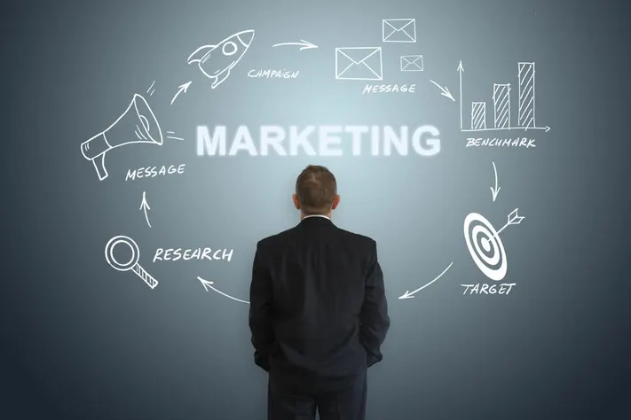

Who we are
We are a global strategy and innovation arm
At Ogilvy Consulting, we believe in the power of brand, customer experience, data and technology to transform businesses, and drive growth. In an era of great fragmentation, brands are the connective tissue for complex organizations and global economies.
Strong customer-centric brands are proven to increase shareholder value and to drive market share, revenues and profits — futureproofing business performance.
BRAND STRATEGY
Insight-led brand building across the full lifecycle, from brand invention, purpose and identity, to existing brand transformation, brand portfolio & architecture optimization, corporate brand and reputation consulting
Crafting innovative marketing strategies that integrate multi-stakeholder messages and tactics across channels, leveraging data and marketing technology to speed impact and improve ROI
MARKETING STRATEGY
Crafting innovative marketing strategies that integrate multi-stakeholder messages and tactics across channels, leveraging data and marketing technology to speed impact and improve ROI
Formulating superior customer experience (Cx) across all brand touch points, from defining the Cx enterprise vision, to benchmarking Cx maturity to charting an integrated roadmap of Cx priorities